Neste projeto, diferentes subsistemas trabalham juntos: o ESP32 cria sua própria rede Wi‑Fi e uma página de controle para movimentar dois motores DC por meio da ponte H MX1508. A montagem possui dois domínios de alimentação e duas chaves: uma para o ESP32 e outra para os motores.
Conceitos
- Tensão, corrente e potência
- Pilhas em série
- Pilhas em paralelo
- GND comum entre ESP32 e ponte H
- VCC e polaridade
- Soldagem, curto-circuito e montagem segura
- Arduino IDE, pacote de placa, compilação e upload
- GPIO, HIGH e LOW
- Interruptores
- Motor DC, corrente de partida e ponte H
- LM2596, step-down, trimpot e multímetro
- ESP32, alimentação, Wi‑Fi e níveis lógicos
- Impressão 3D FDM, fatiamento e montagem
- Integração mecânica, elétrica, testes e diagnóstico
Essas fundamentações explicam as escolhas do projeto: as pilhas são ligadas em série para somar tensão; a ponte H fornece corrente e inverte o sentido dos motores; o GND comum dá referência aos sinais; o LM2596 reduz a tensão; e as GPIO apenas comandam o driver, sem alimentar motores.
Componentes
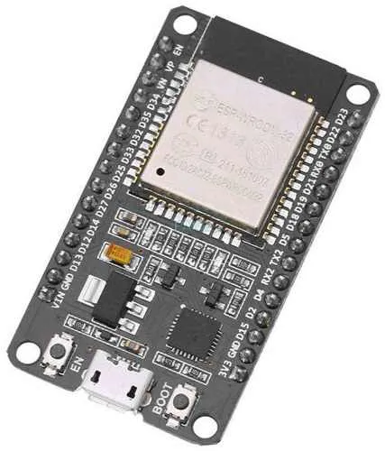
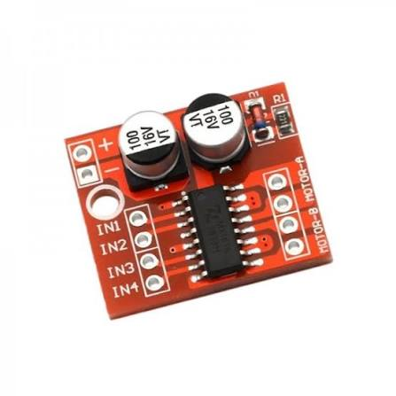
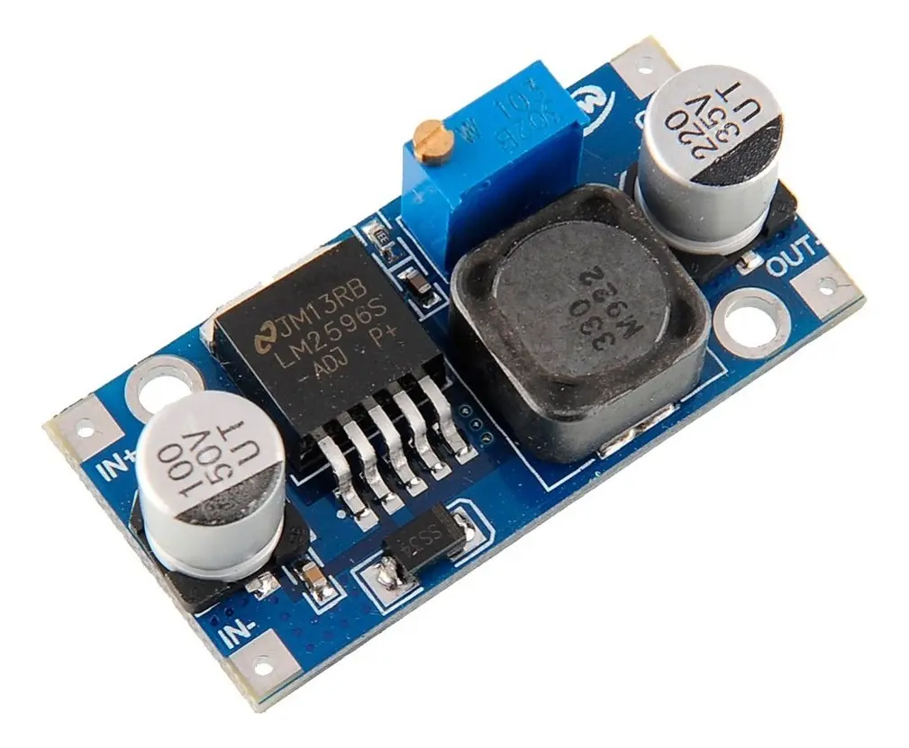
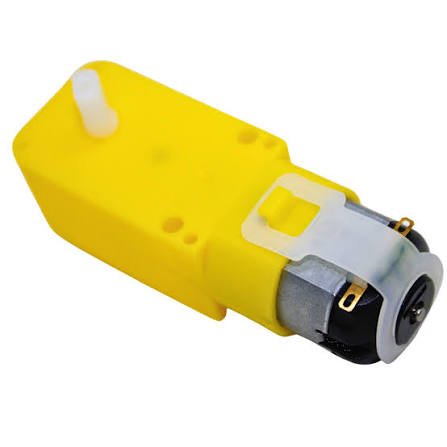
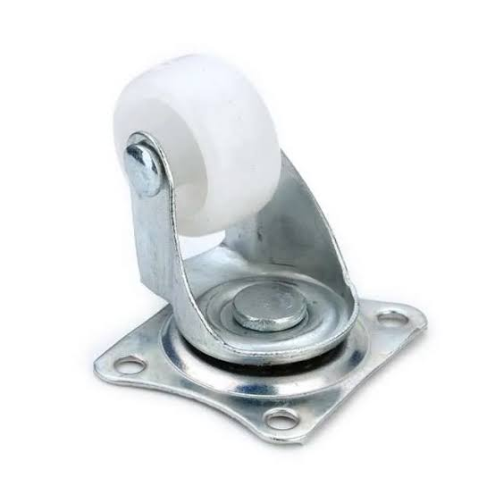
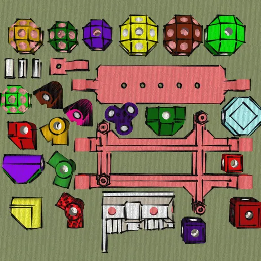
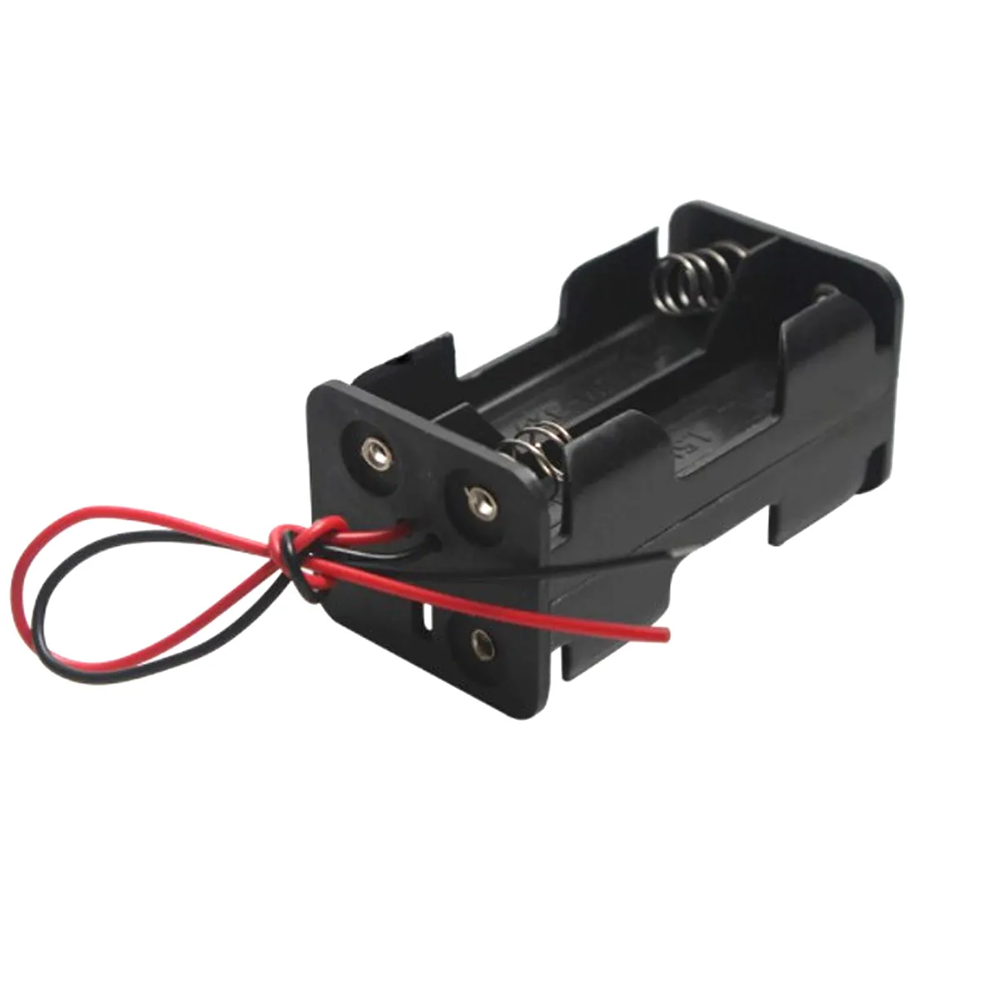
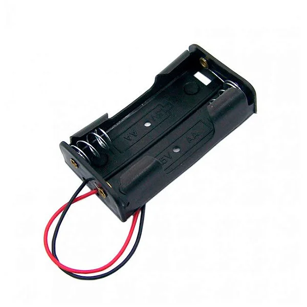
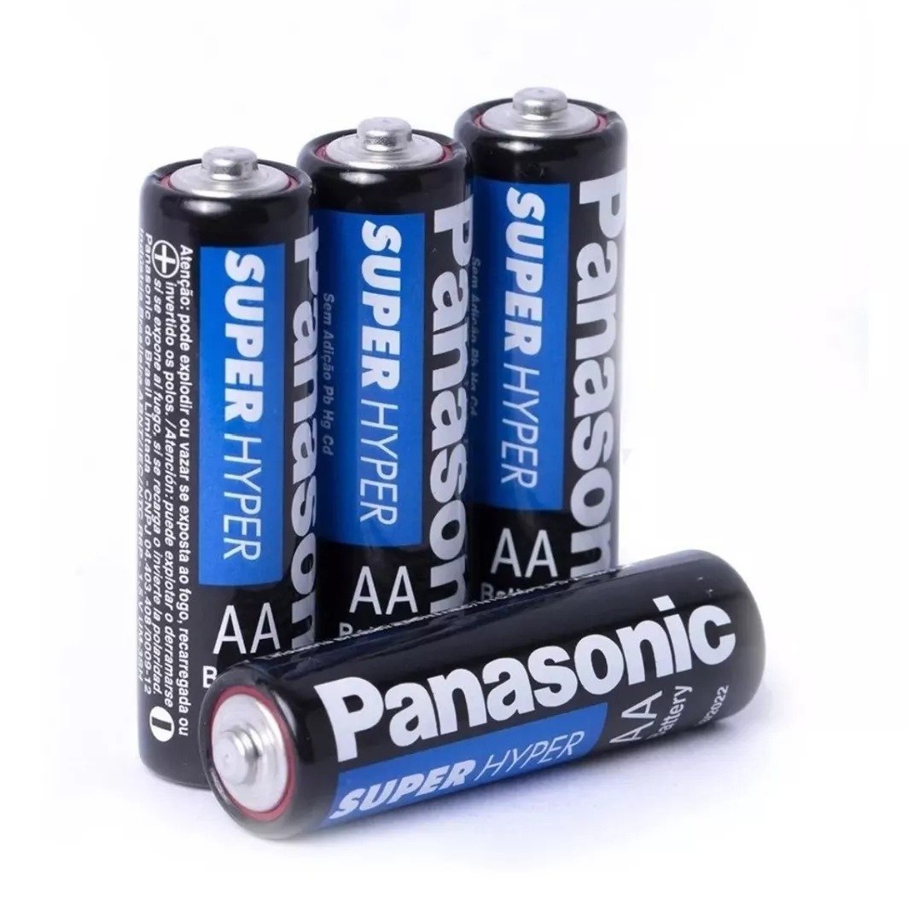
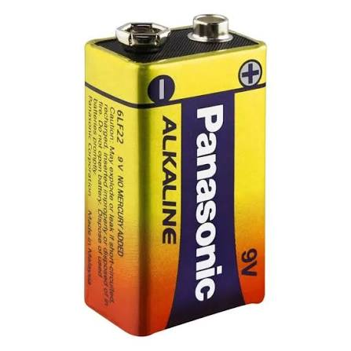
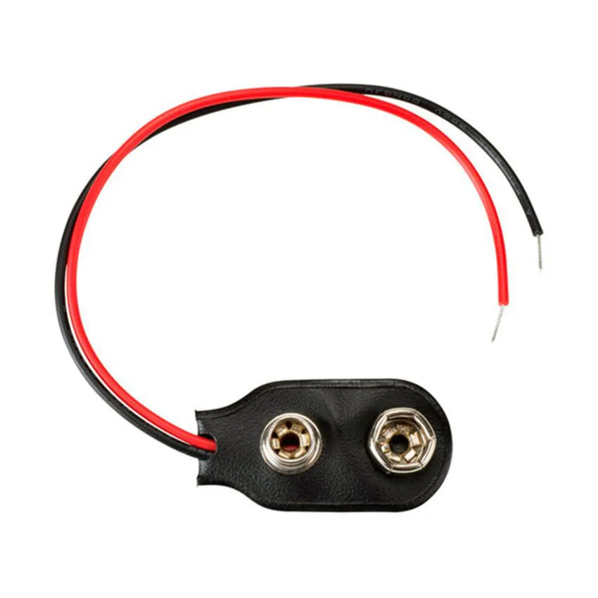
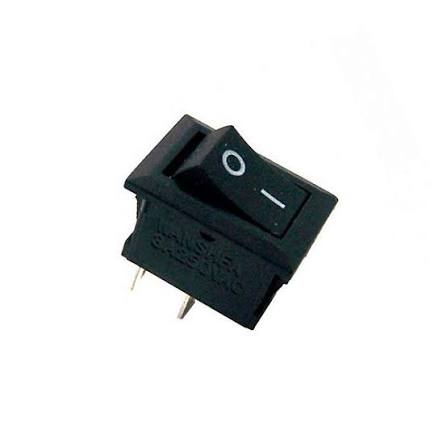
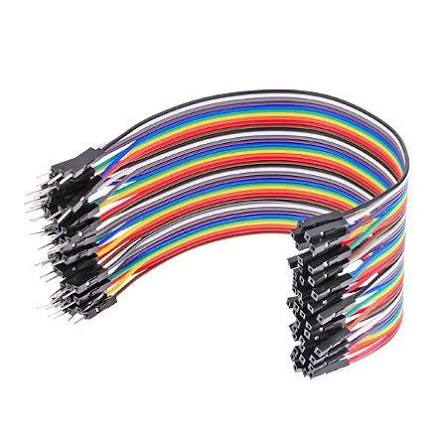
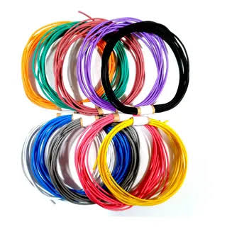
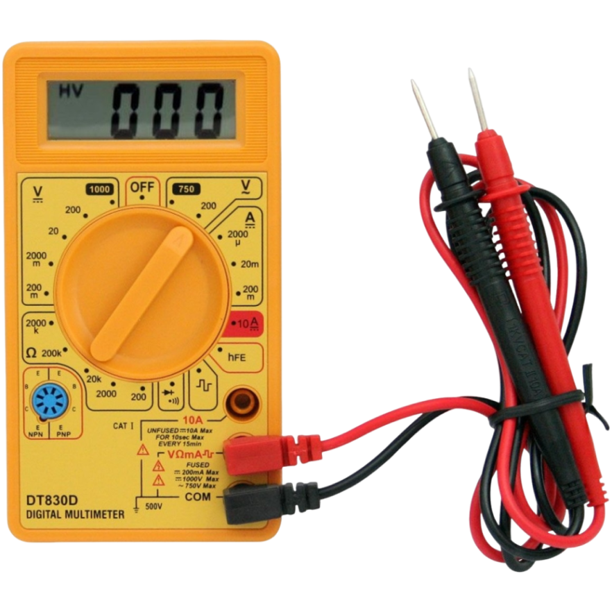
Chassi ModuBot
O chassi será montado com o modelo 3D ModuBot, disponível no Cults3D. Considere 1× conjunto impresso do chassi ModuBot na lista de materiais do projeto.
Montagem mecânica
- Separe os vértices e arestas: os vértices são as peças impressas em 3D e as arestas são os palitinhos. Entre os vértices, identifique as peças específicas para os motores TT, a roda boba e o ESP32.
- Planeje o formato do carrinho e introduza as arestas nos pontos de encaixe dos vértices. Os palitinhos formam as arestas da estrutura modular e mantêm as peças impressas conectadas.
- Confira o esquadro da estrutura e confirme que os dois lados possuem comprimentos equivalentes antes do aperto final.
- Recorte as faces em papel-cartão ou papelão, usando a estrutura como referência. Fixe as faces sem deformar as arestas e preserve aberturas para fios, chaves, bateria e manutenção.
- Parafuse cada motor TT em seu vértice específico, parafuse a roda boba em seu vértice específico e parafuse o ESP32 no vértice destinado à placa.
- Conecte esses vértices específicos à estrutura usando as arestas, ou seja, os palitinhos. Verifique a rigidez, o alinhamento, o giro livre das rodas e a estabilidade da roda boba.
- Posicione temporariamente a MX1508, o LM2596, os suportes de pilhas e as duas chaves. Distribua os itens pesados considerando o centro de massa, planeje os fios e mantenha o USB do ESP32, o trimpot, os bornes e as chaves acessíveis.
- Mantenha a região da antena do ESP32 livre de metal, pilhas e feixes de fios.
Guia de montagem
Regra de segurança: mantenha as duas chaves desligadas ao soldar, encaixar ou alterar qualquer fio. Siga um teste por etapas: teste antes de conectar o ESP32, depois de soldar os jumpers e novamente antes da primeira partida.
Fluxo geral
- Monte a estrutura ModuBot conectando os vértices impressos em 3D por meio das arestas, que são os palitinhos, e adicione as faces de papel-cartão ou papelão. Parafuse os motores TT, a roda boba e o ESP32 aos respectivos vértices específicos e conecte-os ao restante da estrutura por meio das arestas.
- Escolha uma estratégia para a eletrônica: montar e soldar o circuito fora do chassi para depois fazer a fixação com cola quente; ou posicionar e colar cada componente no chassi antes de fazer a soldagem.
- Em qualquer estratégia, trabalhe sem alimentação. A cola quente não deve cobrir bornes, conectores, o trimpot do LM2596, botões, a porta USB ou a antena do ESP32. Aguarde a cola esfriar e aplique alívio de tensão nos fios antes de aproximar pilhas ou ligar o circuito.
- Solde e conecte os componentes conforme as etapas seguintes.
- Antes de encaixar os jumpers do LM2596 em
VIN/5VeGNDdo ESP32, meça obrigatoriamente a saída e confirme aproximadamente5,0 V. Depois de qualquer nova solda nessa alimentação, meça novamente. - Encaixe a alimentação somente depois de confirmar
5,0 V, ligue a chave do ESP32 e observe os LEDs do LM2596 e da placa. Em seguida, desligue a chave novamente. - Desenvolva o código ou obtenha um modelo de controle, conecte o ESP32 ao computador por USB e faça o upload com as duas chaves do carrinho desligadas.
1. Alimentação de 5 V do ESP32
- Confirme com o multímetro qual fio do conector da bateria de 9 V é positivo e qual é negativo.
- Solde o fio positivo do conector em um terminal da primeira chave gangorra.
- Solde outro fio do segundo terminal da chave até
IN+do LM2596. - Ligue o negativo do conector diretamente a
IN−do LM2596. - Isole as soldas. Não conecte a saída ao ESP32 ainda.
O caminho é positivo da bateria → chave → IN+ do LM2596. A chave precisa interromper o positivo; nenhum outro fio pode contorná-la.
2. Ajuste obrigatório do LM2596
- Conecte a ponta preta do multímetro em
COMe a vermelha emV/Ω. - Selecione tensão contínua, indicada por
V⎓,VDCou uma linha contínua sobre uma tracejada. Em um multímetro manual como o DT830D, use a escala 20 V DC. - Ligue somente a chave da bateria de 9 V.
- Encoste a ponta preta em
OUT−e a vermelha emOUT+. Não permita que as pontas se toquem. - Gire lentamente o trimpot até o visor indicar aproximadamente 5,0 V. Alguns módulos precisam de muitas voltas.
- Desligue a chave e desconecte a bateria.
Teste obrigatório: o ESP32 permanece desconectado durante o ajuste. Nunca use a escala de corrente A para medir tensão, pois isso pode provocar curto-circuito. Não confie na posição do trimpot: confirme o valor no multímetro.
3. Jumpers do LM2596 e alimentação do ESP32
- Corte jumpers com extremidade fêmea e solde-os em
OUT+eOUT−do LM2596. - Isole separadamente as duas soldas.
- Reconecte a bateria, ligue a chave e meça novamente nas extremidades dos jumpers.
- Confirme polaridade e aproximadamente
5,0 V. - Desligue a chave. Encaixe
OUT+no pinoVIN/5VeOUT−em um pinoGNDdo ESP32.
Não solde diretamente no ESP32. Os 5 V alimentam a entrada VIN/5V da placa; as GPIO do chip continuam usando lógica de 3,3 V. Medir novamente depois da soldagem dos jumpers é obrigatório.
Não encaixeVIN/5VeGNDpor confiança visual. Meça nos jumpers, confirme a polaridade e confirme aproximadamente5,0 Vimediatamente antes de conectá-los ao ESP32.
4. Teste dos LEDs de alimentação
- Depois de medir e confirmar aproximadamente
5,0 V, encaixeOUT+do LM2596 emVIN/5VeOUT−emGNDdo ESP32. - Ligue a chave da bateria de 9 V e observe se o LED do LM2596 e o LED de alimentação do ESP32 acendem.
- Se algum LED não acender, desligue imediatamente e confira bateria, chave, soldas, polaridade e continuidade.
- Mesmo que os dois LEDs acendam, isso não comprova que a tensão está correta. O valor de aproximadamente
5,0 Vprecisa ter sido confirmado com o multímetro antes da conexão. - Desligue a chave novamente antes de continuar a montagem, conectar GPIO, soldar motores ou enviar o código.
5. Pilhas em série e chave dos motores
Esta etapa usa o conceito de pilhas em série: as tensões dos dois suportes se somam.
- Separe seis pilhas AA do mesmo tipo, química, capacidade e estado de carga.
- Inspecione as pilhas. Não use unidades amassadas, enferrujadas, aquecidas, inchadas ou com vazamento.
- Coloque quatro pilhas AA no suporte 2×2 e duas pilhas AA no suporte
1×2, respeitando os símbolos+e−gravados nos suportes. - Confira visualmente cada pilha antes de continuar. Uma pilha invertida pode reduzir a tensão do conjunto, aquecer ou vazar.
- Una o negativo de um suporte ao positivo do outro para formar a ligação em série.
- No positivo que sobrou, instale a segunda chave: positivo das pilhas → chave →
VCCda MX1508. - Ligue o negativo que sobrou diretamente ao
GNDda MX1508. - Com a chave desligada, confira continuidade, polaridade e ausência de curto.
- Ligue a chave sem os motores, meça a tensão entre
VCCeGNDe desligue novamente.
Se as seis pilhas forem alcalinas de 1,5 V, o conjunto fornece aproximadamente 9 V. Se forem NiMH recarregáveis de 1,2 V, fornece aproximadamente 7,2 V. Não misture químicas, capacidades, pilhas novas e usadas. Veja também o efeito e os cuidados de uma ligação de pilhas em paralelo.
6. Cuidados com as pilhas AA
- Antes da montagem: com as pilhas fora dos suportes, meça cada uma em
V⎓, escala20 V DC. Encoste a ponta preta no polo−e a vermelha no polo+. Compare as seis leituras e substitua unidades muito diferentes das demais. - Alcalinas: são pilhas descartáveis de aproximadamente
1,5 V; nunca tente recarregá-las. - NiMH: são recarregáveis de aproximadamente
1,2 V; carregue-as somente em carregador próprio para NiMH e, de preferência, como um conjunto mantido junto. - Durante o uso: pare imediatamente se houver aquecimento anormal, cheiro, ruído ou vazamento. Desligue as duas chaves e não toque diretamente em material vazado.
- Após o uso: desligue as duas chaves. Retire as pilhas dos suportes se o carrinho ficar guardado por vários dias, evitando vazamento e corrosão dos contatos.
- Transporte: mantenha as pilhas organizadas, sem contato com moedas, parafusos, ferramentas ou outros metais que possam unir os polos.
- Descarte: não jogue pilhas no fogo nem no lixo comum. Isole os terminais e leve pilhas usadas ou danificadas a um ponto de coleta apropriado.
7. GND comum e sinais da ponte H
Com as duas chaves desligadas, ligue um GND do ESP32 ao GND da MX1508. O GND comum é a referência dos sinais de controle; ele não substitui os negativos das duas fontes. Antes dessa etapa, a alimentação do ESP32 já deve ter sido medida e confirmada em aproximadamente 5,0 V.
Solde jumpers com extremidade fêmea nos pontos de controle da MX1508 e encaixe-os no ESP32. Não solde no ESP32.
| ESP32 | MX1508 | Função |
|---|---|---|
D27 | IN1 | Controle 1 do motor A |
D26 | IN2 | Controle 2 do motor A |
D32 | IN3 | Controle 1 do motor B |
D18 | IN4 | Controle 2 do motor B |
Depois da soldagem, faça um teste de continuidade fio a fio e confirme que não existe curto entre pinos vizinhos. Teste novamente antes de energizar.
8. Motores
Na ponte H deste projeto, as duas saídas estão identificadas como Motor A e Motor B. Cada saída possui dois bornes sem identificação individual. Para orientar a montagem, eles serão chamados apenas de primeiro terminal e segundo terminal de cada saída; essa nomenclatura não representa positivo e negativo fixos.
Os dois motores formam uma tração diferencial: o movimento depende da combinação dos sentidos do lado A e do lado B.
- Solde os dois fios de um motor no primeiro e no segundo terminal da saída Motor A.
- Solde os dois fios do outro motor no primeiro e no segundo terminal da saída Motor B.
- Isole as soldas e prenda os fios para a vibração não forçar os terminais.
- A ordem correta dos dois fios será descoberta no teste prático. Suspenda o carrinho, execute um comando de movimento e observe o sentido de cada motor.
- Se um motor girar no sentido contrário ao necessário, desligue as duas chaves e troque entre si os dois fios desse motor. Nunca faça essa inversão com o circuito energizado.
Imagem do circuito
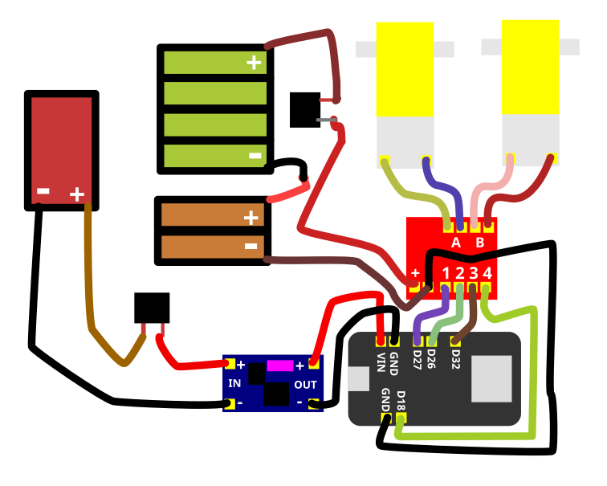
Código
O programa transforma o ESP32 em um ponto de acesso SoftAP chamado Carrinho-ESP32. Depois de conectar o celular a essa rede Wi‑Fi local, a página de controle é aberta pelo endereço IP local 192.168.4.1. O ESP32 atua como servidor, e os comandos usam rotas HTTP para acionar os quatro pinos da ponte H. A função parar() estabelece um estado seguro antes de iniciar o Wi‑Fi. O sentido físico correspondente a Frente será confirmado na prática, pois depende da ordem dos fios nos dois terminais de Motor A e Motor B.
#include <WiFi.h>
#include <WebServer.h>
const char* nomeRede = "Carrinho-ESP32";
const char* senhaRede = "carrinho123";
const int IN1 = 27;
const int IN2 = 26;
const int IN3 = 32;
const int IN4 = 18;
// Troque false por true se um dos motores girar invertido.
const bool inverterMotorA = false;
const bool inverterMotorB = false;
WebServer servidor(80);
void motores(bool a1, bool a2, bool b1, bool b2) {
if (inverterMotorA) {
bool temporario = a1;
a1 = a2;
a2 = temporario;
}
if (inverterMotorB) {
bool temporario = b1;
b1 = b2;
b2 = temporario;
}
digitalWrite(IN1, a1); digitalWrite(IN2, a2);
digitalWrite(IN3, b1); digitalWrite(IN4, b2);
}
void parar() { motores(LOW, LOW, LOW, LOW); }
void frente() { motores(HIGH, LOW, HIGH, LOW); }
void tras() { motores(LOW, HIGH, LOW, HIGH); }
void esquerda() { motores(LOW, HIGH, HIGH, LOW); }
void direita() { motores(HIGH, LOW, LOW, HIGH); }
const char pagina[] PROGMEM = R"HTML(
<!doctype html><html lang="pt-BR"><head>
<meta name="viewport" content="width=device-width,initial-scale=1">
<title>Carrinho ESP32</title><style>
body{font-family:sans-serif;text-align:center;margin:30px;background:#eef2f5}
.controle{display:grid;grid-template-columns:repeat(3,90px);gap:12px;justify-content:center}
button{min-height:70px;font-size:18px;border:0;border-radius:12px;background:#2457a7;color:white}
.parar{background:#b32424}</style></head><body><h1>Carrinho ESP32</h1>
<div class="controle"><span></span><button onclick="cmd('frente')">Frente</button><span></span>
<button onclick="cmd('esquerda')">Esquerda</button><button class="parar" onclick="cmd('parar')">Parar</button>
<button onclick="cmd('direita')">Direita</button><span></span><button onclick="cmd('tras')">Ré</button><span></span></div>
<script>function cmd(c){fetch('/'+c)}</script></body></html>
)HTML";
void responderCom(void (*movimento)()) {
movimento();
servidor.send(200, "text/plain", "ok");
}
void setup() {
Serial.begin(115200);
pinMode(IN1, OUTPUT); pinMode(IN2, OUTPUT);
pinMode(IN3, OUTPUT); pinMode(IN4, OUTPUT);
parar();
WiFi.mode(WIFI_AP);
WiFi.softAP(nomeRede, senhaRede);
servidor.on("/", []() { servidor.send_P(200, "text/html; charset=utf-8", pagina); });
servidor.on("/frente", []() { responderCom(frente); });
servidor.on("/tras", []() { responderCom(tras); });
servidor.on("/esquerda", []() { responderCom(esquerda); });
servidor.on("/direita", []() { responderCom(direita); });
servidor.on("/parar", []() { responderCom(parar); });
servidor.begin();
Serial.print("Conecte-se a "); Serial.println(nomeRede);
Serial.print("Abra http://"); Serial.println(WiFi.softAPIP());
}
void loop() {
servidor.handleClient();
}Se Frente fizer o carrinho girar ou recuar, identifique qual motor está invertido. No código, altere inverterMotorA ou inverterMotorB de false para true, faça novo upload e repita o teste. A alternativa física é desligar as duas chaves e trocar entre si os dois fios daquele motor.
Enviar o código ao ESP32
O código do carrinho deve ser enviado ao ESP32 usando a Arduino IDE. Com as duas chaves do carrinho desligadas, conecte o ESP32 ao computador por um cabo USB de dados, abra o código, selecione a placa e a porta corretas e clique em Carregar.
Depois de configurar a Arduino IDE, crie um sketch, cole o código do projeto, clique em Verificar e depois em Carregar. Aguarde a confirmação do upload antes de retirar o cabo USB.
Usar o controle Wi‑Fi
O ESP32 cria uma rede Wi‑Fi local para controlar o carrinho. Essa rede não fornece acesso à internet. O SSID e a senha são definidos no começo do código pelas variáveis nomeRede e senhaRede; portanto, podem ser alterados antes do upload. Se você mudar esses valores, use no celular o novo nome e a nova senha, e não os exemplos abaixo.
- Desconecte o USB antes de usar a alimentação do carrinho.
- Faça a revisão elétrica e ligue primeiro a chave do ESP32.
- No celular, conecte-se a
Carrinho-ESP32com a senhacarrinho123. - Permaneça conectado quando o celular avisar que essa rede não possui internet.
- Abra
http://192.168.4.1no navegador. - Se a página não abrir ou o celular abandonar a rede do ESP32, desligue temporariamente os dados móveis e recursos como troca automática para uma rede com internet. Reconecte-se ao Wi‑Fi do carrinho e tente o endereço novamente.
- Suspenda o carrinho para as rodas não tocarem o chão e ligue a chave dos motores.
- Teste
Parar,Frente,Ré,EsquerdaeDireita.
O modo SoftAP faz o ESP32 criar uma rede própria e servir a interface HTML, CSS e JavaScript localmente, sem roteador. O celular conversa diretamente com o ESP32; essa conexão controla o carrinho, mas não oferece internet.
Checklist antes da primeira partida
Este checklist faz parte do comissionamento do carrinho: cada verificação deve ser concluída antes do teste seguinte.
- LM2596 medido em
V⎓, escala20 V DC, e ajustado para aproximadamente5,0 V. - Tensão medida novamente depois da soldagem dos jumpers.
OUT+do LM2596 ligado aVIN/5V, nunca a uma GPIO ou ao pino3V3.- Suporte
4×AAno formato2×2ligado em série ao suporte2×AAno formato1×2. - Seis pilhas AA iguais, saudáveis, com polaridade conferida e leituras individuais compatíveis.
- Uma chave no positivo da bateria de 9 V e outra no positivo das pilhas AA.
- D27/IN1, D26/IN2, D32/IN3 e D18/IN4 conferidos.
- GND do ESP32 e GND da MX1508 interligados.
- Um motor ligado aos dois terminais de Motor A e o outro aos dois terminais de Motor B, nunca diretamente ao ESP32.
- Soldas isoladas, continuidade testada e nenhum curto entre terminais.
- Upload concluído com a placa e a porta corretas.
Para o carrinho funcionar, as duas chaves precisam estar ligadas. Uma alimenta o ESP32 pelo LM2596; a outra alimenta a MX1508 e os motores.
Diagnóstico rápido
Faça uma alteração por vez e use o método de isolamento de falhas para descobrir em qual subsistema o comportamento se altera.
- Rede Wi‑Fi não aparece: confira os
5 VemVIN/5V, a chave do ESP32, o upload e o nome definido emnomeRede. - Página não abre: confirme que o celular continua conectado à rede do ESP32 e digite
http://192.168.4.1completo. Se necessário, desligue temporariamente os dados móveis e a troca automática de rede. O Wi‑Fi criado pelo ESP32 é local e não possui internet. - GND da ponte H e do ESP32 desconectados: os dois módulos perdem a referência comum dos sinais. Os motores podem ignorar comandos, funcionar de maneira intermitente ou responder de forma imprevisível. Desligue as duas chaves, restaure a ligação entre os GND e consulte o conceito de GND comum entre ESP32 e ponte H.
- Bateria de 9 V descarregada e LED azul do LM2596 apagado: desligue o circuito e meça a bateria na escala
20 V DC. Confira também o conector, a chave e a tensão emIN+/IN−do LM2596. Substitua a bateria descarregada e, antes de reconectar o ESP32, ajuste e confirme novamente aproximadamente5,0 Vna saída. - ESP32 reiniciando: isso pode ser um brownout. Meça a saída do LM2596 durante a inicialização do Wi‑Fi. Reinicializações podem indicar queda de tensão, bateria fraca, mau contato, solda ruim ou fonte incapaz de fornecer os picos de corrente. Confirme
5,0 Vsob carga e use uma fonte com capacidade adequada. - Motores não giram: confirme a segunda chave, a tensão em
VCC/GNDda MX1508, a continuidade e se existe travamento mecânico. Uma roda presa pode levar o motor à corrente de travamento. - Motor invertido: altere
inverterMotorAouinverterMotorBdefalseparatrue, envie novamente o código e repita o teste com o carrinho suspenso. Como alternativa, desligue as duas chaves e troque entre si os dois fios do motor invertido. - Comandos trocados: confira D27/IN1, D26/IN2, D32/IN3 e D18/IN4.
- Falta de corrente para o ESP32: uma ligação de baterias em paralelo mantém a tensão e pode aumentar a capacidade de corrente, mas não deve ser improvisada. Não una diretamente duas baterias de 9 V diferentes ou com cargas diferentes. Prefira uma bateria nova capaz de fornecer a corrente necessária, uma fonte adequada ou um suporte projetado para células iguais e protegido. Consulte pilhas em paralelo e pilhas em série antes de alterar a alimentação.